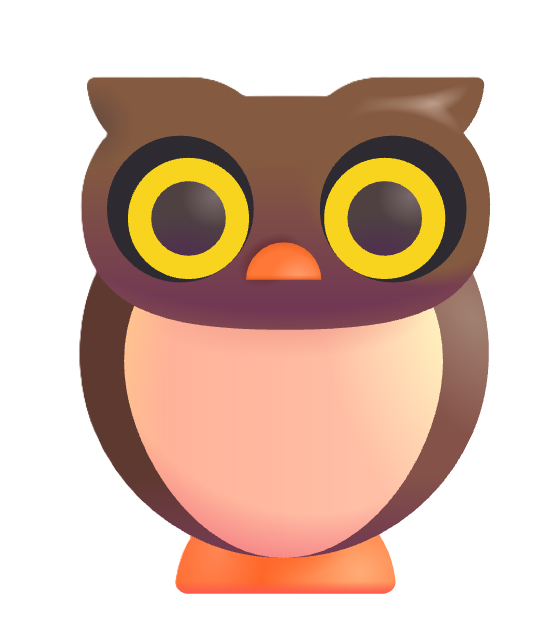

It loads everything you've saved about people and answers from that — instantly and completely. Like talking to your own memory.
/archive [name] or /archive-review/deep [name] or /deep-review/restore [name]/costs any time to see your running total, and set a daily cap in Settings. Voice replies use either OpenAI TTS (Marin & Onyx voices, pay-as-you-go from the same OpenAI bucket) or ElevenLabs (Brittney & Callum voices — also pay-as-you-go; a few dollars of ElevenLabs credit covers normal use). No required subscription — for any of it.Type / in the chat input to see autocomplete suggestions — command names are fuzzy-matched here, so you don't need to type them exactly.
free — never uses your API credits tokens — draws from your Anthropic prepaid balance (typically <$0.01) free* — free for bare browse; costs tokens when a search term is given
/security.
free
/security.
free
/security.
free
The audit looks for integrity issues in your memory — broken characters in metadata, malformed headers, date inconsistencies — separately from the size-based memory lifecycle nudges.
/audit runs the free Quick scan over your active and archived files. /audit deep adds near-duplicate and name-mismatch detection, plus photo integrity checks — broken references (photo listed in a record but missing from storage) and orphaned files (in storage but not referenced anywhere). Cost confirmed before it runs. /audit ignored lists findings you've dismissed and lets you un-ignore individual entries.
Every finding has two actions: Open (jumps to the record's edit modal so you can fix it) and Ignore (suppresses that exact issue in future audits).
/archive, /edit, etc. regardless of language. Claude responds in whatever language you write in — this setting does not change that. Takes effect on the next page reload (a reload prompt appears after changing).
Two transcription engines are available. Switch between them in Settings → Voice input. The setting persists across sessions.
/transcribe endpoint. More accurate than Auto — especially for names, technical terms, and quieter environments. Costs a small fraction of a cent per clip (billed to your OpenAI account). Adds a 1–3 second round-trip while the audio is processed. Requires your OpenAI API key to be configured./edit people adam narrows to people.md. /archive loops archives from loops.md only./edit, headers use ##, bullets use -, and bold uses **text**. Not sure about the syntax? Markdown basic syntax →